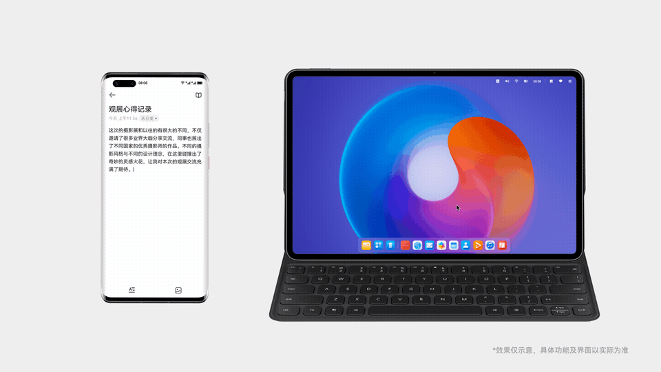
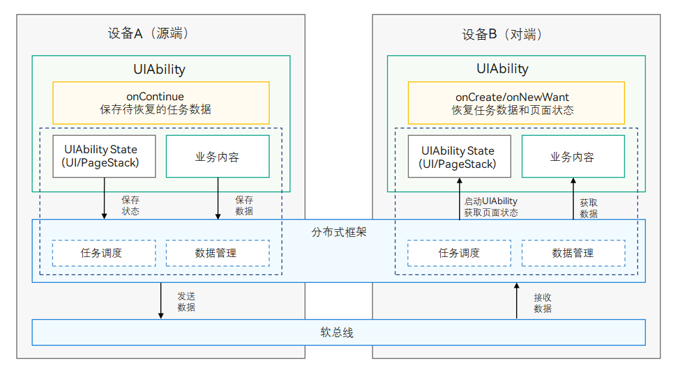

App continuity lets users quickly switch to the same application on another device and continue the experience seamlessly.
For example, when the usage scenario changes, the previous device may no longer be suitable for the current task, or a more suitable device may be nearby. The user can continue the task on the new device. After continuity is complete, the application on the previous device can exit or remain open while the user focuses on the activated device.
As shown below, edit a memo on a phone, then switch to a tablet at the office and continue editing without interrupting the task.


For example, a browser can continue browsing a page from the source device on the target device. The system automatically saves page state, such as browsing progress; developers must use onContinue() to save business data such as the page URL.
For specific limitations, see the app continuity constraints and specifications.
In a text-and-image creation scenario, Ability continuity moves edited content to a more convenient device for continued editing, making it easy to edit content across devices.
Reference cases
Use case: continuity for file data such as images, videos, and PDFs.
The system resumes the user’s previous browsing position, precisely locating the area near the item where they left without requiring them to search from the top, saving time and effort and improving long-list browsing.
Reference cases
Use case: continuity for List, Grid, and Swiper content, such as waterflows and carousels.
The system seamlessly resumes video from the pause point on the source device, preserving playback progress, image quality, and audio settings. Streaming content and locally stored video files can both resume smoothly across devices.
Reference cases
Use case: continuity for media playback, including audio and video.
The system quickly locates the web page position viewed on the source device, maintains browsing continuity, avoids repetitive searches, and improves information access efficiency.
Reference cases
Use case: continuity for H5 content embedded in Web components, primarily using JsBridge.